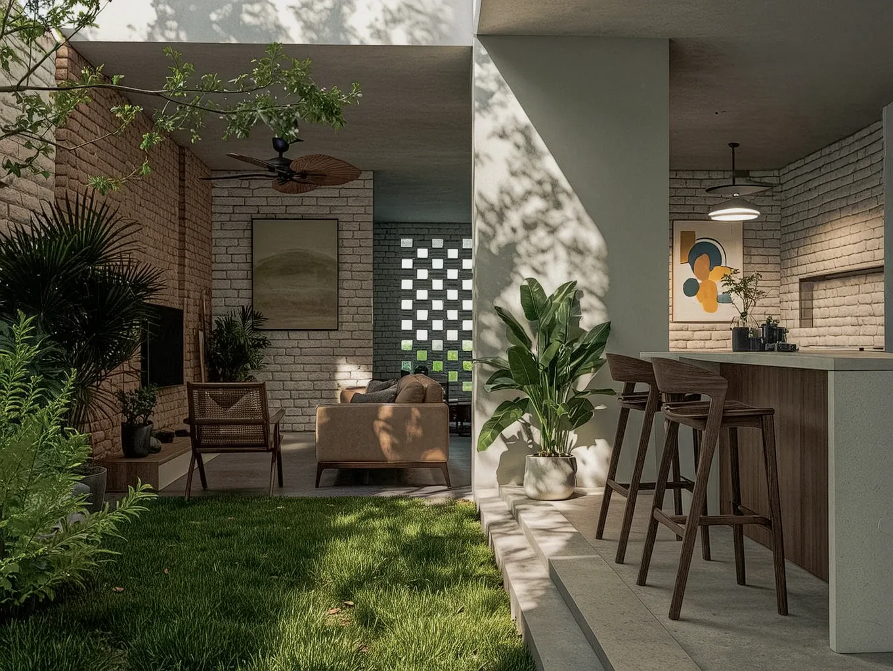
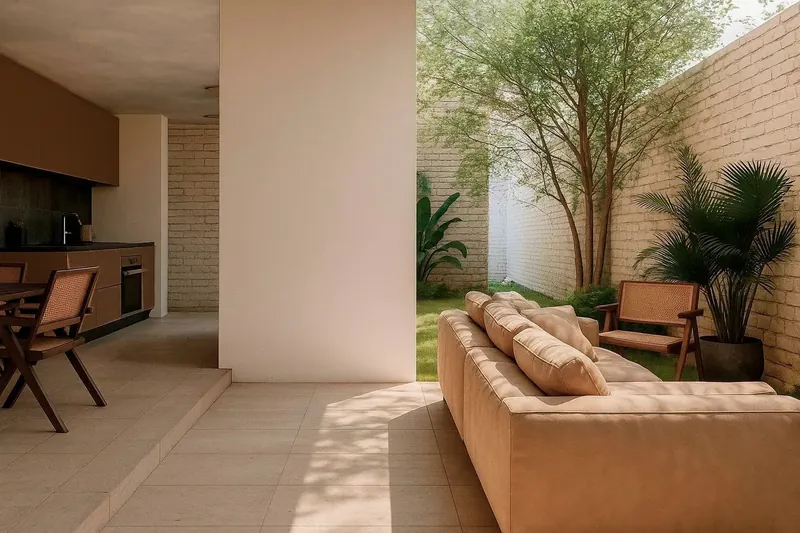
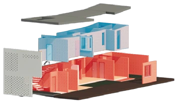

01 — El jardín
Entrar por el jardín
Al fondo, el jardín recibe la sala y la barra de la cocina.

01 — El jardín
Al fondo, el jardín recibe la sala y la barra de la cocina.
01 — El proyecto
Una vivienda unifamiliar en Tlaquepaque que busca nuevas formas de habitar: espacios sociales y privados con materiales de la región.
Proyección industrial, materiales a la vista e interiorismo mid-century.
02 — Arquitectura
Tres ideas ordenan la vivienda, de la calle al jardín.

Gesto 01 — Los patios
Un patio en la entrada, otro al centro y un jardín al fondo: cada espacio mira a uno.
Gesto 02 — La materia
Ladrillo y concreto sin revestir, con materiales de la región.

Gesto 03 — Los niveles
Abajo, sala, comedor, cocina y patios; arriba, tres habitaciones, una con baño privado y vestidor.
03 — Planimetría
De la planta baja al detalle constructivo. Abre cada lámina para verla con zoom.
04 — Recorrido
[DATO: video del recorrido — guarda el archivo como assets/recorrido.mp4]
05 — Materiales
Ladrillo y concreto a la vista acompañan un interior de inspiración mid-century.
06 — Ubicación
[DATO: texto sobre Tlaquepaque y el entorno del terreno]
07 — Contacto
Diseño de Vivienda Unifamiliar · 2025
Arquitectura Avanza y GDL Propiedades
[DATO: confirmar nombre del organizador — la lámina dice “Arquitectura Avanzada”]